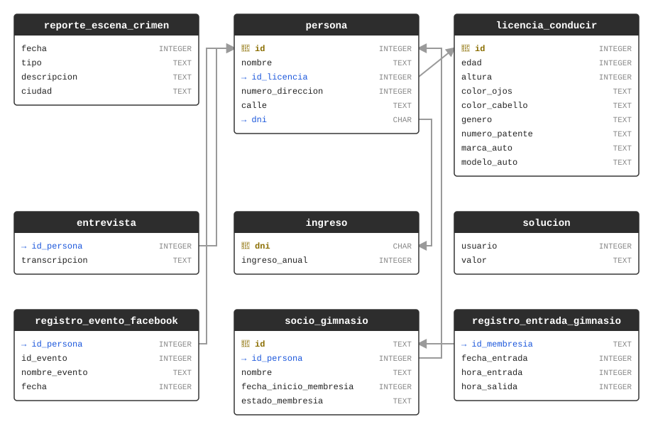

¡Ha habido un asesinato en SQL City! El Misterio del Asesinato en SQL está diseñado tanto para ser una lección autoguiada para aprender conceptos y comandos de SQL como un juego divertido para que usuarios experimentados de SQL resuelvan un crimen intrigante.
Tutorial guiado para principiantes en SQL
Si ya te sentís cómodo con SQL, podés saltarte estas explicaciones y poner a prueba tus habilidades. A continuación te presentamos algunos conceptos básicos de SQL, con el detalle justo para resolver el asesinato. Si querés una introducción más completa a SQL, probá con Select Star SQL.
Ha ocurrido un crimen y el detective necesita tu ayuda. El detective te dio el reporte de la escena del crimen, pero de algún modo lo perdiste. Recordás vagamente que el crimen fue un asesinato que ocurrió en algún momento del 15 de enero de 2018 y que tuvo lugar en SQL City. Empezá recuperando el reporte correspondiente de la base de datos del departamento de policía.
Todas las pistas de este misterio están enterradas en una base de datos enorme, y necesitás usar SQL para navegar por esta vasta red de información. Tu primer paso para resolver el misterio es recuperar el reporte correspondiente de la escena del crimen de la base de datos del departamento de policía. A continuación explicaremos a grandes rasgos los comandos que necesitás conocer; cuando estés listo, podés empezar a adaptar los ejemplos para crear tus propios comandos SQL en busca de pistas -- podés ejecutar cualquier SQL en cualquiera de los cuadros de código, sin importar lo que hubiera en el cuadro al empezar.
Algunas definiciones
¿Qué es SQL?
SQL, que significa Structured Query Language (lenguaje de consulta estructurado), es una forma de interactuar con bases de datos relacionales y tablas que nos permite a los humanos obtener información específica y significativa.
Un momento, ¿qué es una base de datos relacional?
No hay una única definición para la palabra base de datos. En general, las bases de datos son sistemas para gestionar información. Pueden tener distintos niveles de estructura impuestos sobre los datos. Cuanto más estructurados están los datos, más fácil resulta para las personas y las computadoras trabajar con ellos de forma eficiente.
Las bases de datos relacionales son probablemente el tipo de base de datos más conocido. En esencia, están formadas por tablas, que se parecen mucho a las hojas de cálculo. Cada columna de la tabla tiene un nombre y un tipo de dato (texto, número, etc.), y cada fila de la tabla es una instancia específica de aquello de lo que "trata" la tabla. La parte "relacional" viene dada por reglas específicas sobre cómo conectar datos entre distintas tablas.
¿Qué es un DER?
DER, que significa Diagrama de Entidad-Relación (ERD en inglés), es una representación visual de las relaciones entre todas las tablas relevantes dentro de una base de datos. Podés encontrar el DER de nuestra base de datos del Misterio del Asesinato en SQL más abajo. El diagrama muestra que cada tabla tiene un nombre (arriba del recuadro, en negrita), una lista de nombres de columnas (a la izquierda) y sus tipos de datos correspondientes (a la derecha, en mayúsculas). También hay íconos de llave dorada, íconos de flecha azul y flechas grises en el DER. Una llave dorada indica que esa columna es la clave primaria de la tabla correspondiente, y una flecha azul indica que la columna es la clave foránea de la tabla correspondiente.
- Clave primaria:
- un identificador único para cada fila de una tabla.
- Clave foránea:
- se usa para referenciar datos de una tabla en otra tabla.
Acá está el DER de nuestra base de datos:

¿Qué es una consulta?
Si miraras los datos de esta base de datos, verías que las tablas son enormes. Hay tantos datos que simplemente no es posible recorrer las tablas fila por fila para encontrar la información que necesitamos. ¿Qué se supone que hagamos entonces?
Acá es donde entran las consultas (queries). Las consultas son instrucciones que construimos para obtener datos de la base de datos. Se leen casi como inglés natural (en su mayor parte). Probemos algunas consultas contra nuestra base de datos. Para cada uno de los cuadros de abajo, hacé clic en "Ejecutar" para correr la consulta del cuadro. Podés editar las consultas ahí mismo en la página para explorar más. (Notá que los comandos SQL no distinguen mayúsculas de minúsculas, pero por convención se escriben en mayúsculas para facilitar la lectura. También podés usar saltos de línea y espacios como quieras para dar formato al comando. La mayoría de los sistemas de bases de datos requieren terminar una consulta con punto y coma (';'), aunque el sistema para ejecutarlas en esta página web es más permisivo.)
¿Qué elementos tiene una consulta SQL?
Una consulta SQL puede contener:
- Palabras clave de SQL (como SELECT y FROM de arriba)
- Nombres de columnas (como la columna nombre de arriba)
- Nombres de tablas (como la tabla persona de arriba)
- Caracteres comodín (como
%) - Funciones
- Criterios de filtrado específicos
- Etc.
Palabras clave de SQL
Las palabras clave de SQL se usan para especificar acciones en tus consultas. No distinguen mayúsculas de minúsculas, pero sugerimos escribirlas en mayúsculas para poder distinguirlas fácilmente del resto de la consulta. Algunas palabras clave frecuentes son:
SELECT
SELECT nos permite obtener datos de columnas específicas de la base de datos:
- * (asterisco): se usa después de SELECT para obtener todas las columnas de la tabla;
- nombre(s)_de_columna: para seleccionar columnas específicas, poné los nombres de las columnas después de SELECT y separalos con comas.
FROM
FROM nos permite especificar qué tabla(s) nos interesan; para seleccionar varias tablas, listá los nombres de las tablas separados por comas. (Pero hasta que aprendas la palabra clave JOIN, puede que te sorprenda lo que pasa. Eso vendrá más adelante.)
WHERE
La cláusula WHERE de una consulta se usa para filtrar resultados según criterios específicos.
Probemos algunas de estas cosas.
La palabra clave AND se usa para encadenar varios criterios de filtrado de modo que los resultados filtrados cumplan con todos y cada uno de los criterios. (También existe la palabra clave OR, que devuelve filas que coincidan con cualquiera de los criterios.)
Si todavía no encontraste el reporte correcto de la escena del crimen, hacé clic en "Mostrar solución" arriba, y reemplazá el contenido del cuadro solo con el comando revelado. (Dejá afuera el /* inicial) Si vos mismo descubriste la consulta que muestra el
único reporte de la escena del crimen en lugar de varios para la misma ciudad y tipo, entonces felicitaciones e ignorá la palabra "Incorrecto". ¡Vas a saber si lo lograste!
Comodines y otras funciones para coincidencias parciales
A veces solo conocés parte de la información que necesitás. SQL puede manejar eso. Los símbolos especiales que representan caracteres desconocidos se llaman "comodines" (wildcards), y SQL admite dos. El más común es el comodín %.
Cuando colocás un comodín % en una cadena de consulta, el sistema SQL devolverá resultados que coincidan exactamente con el resto de la cadena, y que tengan cualquier cosa (o nada) en el lugar del comodín. Por ejemplo,
'Ca%a' coincide con Canada y California.
El otro comodín, menos usado, es _. Este significa 'coincidir con el resto del texto, siempre que haya exactamente un carácter en exactamente la posición del _, sin importar cuál sea. Entonces,
'B_b' coincidiría con 'Bob' y 'Bub' pero no con 'Babe' ni con
'Bb'.
Importante: Al usar comodines, no se usa el símbolo =; en su lugar, se usa
LIKE.
SQL también admite comparaciones numéricas como < (menor que) y > (mayor que). También podés usar las palabras clave BETWEEN y AND -- y todas ellas funcionan tanto con palabras como con números.
Mencionamos que los comandos SQL no distinguen mayúsculas de minúsculas, pero los valores de consulta en
WHERE para = y LIKE sí lo hacen. A veces no sabés cómo está guardado el texto en la base de datos. SQL ofrece un par de funciones que pueden resolver eso. Se llaman UPPER() y
LOWER(), y probablemente puedas deducir qué hacen, especialmente si explorás en el cuadro de abajo.
Profundizando
Funciones agregadas de SQL
A veces las preguntas que querés hacer no son tan simples como encontrar la fila de datos que cumple un conjunto de criterios. Puede que quieras hacer preguntas más complejas como "¿Quién es la persona de más edad?" o "¿Quién es la persona más baja?" Las funciones agregadas te pueden ayudar a responder estas preguntas. De hecho, ya aprendiste una función agregada más arriba, COUNT.
¿Cuántos años tiene la persona con carnet de conducir de más edad? Con poca cantidad de datos, tal vez podrías calcularlo a simple vista, pero hay miles de registros en la tabla licencia_conducir. (¡Probá COUNT si querés saber exactamente
cuántos!) No podés simplemente recorrer esa lista para encontrar la respuesta.
Acá hay algunas funciones agregadas útiles que ofrece SQL:
- MAX
- encuentra el valor máximo
- MIN
- encuentra el valor mínimo
- SUM
- calcula la suma de los valores de la columna especificada
- AVG
- calcula el promedio de los valores de la columna especificada
- COUNT
- cuenta la cantidad de valores especificados de una columna
Hay otra forma de encontrar valores mínimos y máximos, mientras además ves más datos. Podés controlar el orden de los resultados que obtenés. Es bastante intuitivo: solo hay que usar ORDER BY seguido del nombre de una columna. Puede
ser complicado cuando hay muchos datos (cuando la gente se pone seria con SQL, usa herramientas mejores que este sistema basado en la web). Por defecto, ORDER BY ordena de forma "ascendente" (de menor a mayor, o de la A a la Z), pero
podés indicarlo explícitamente con ASC para ascendente, o invertirlo con DESC.
A esta altura, ya sabés suficiente SQL para identificar a los dos testigos. ¡Probá!
Estableciendo conexiones
Uniendo tablas (JOIN)
Hasta ahora, hicimos preguntas que se pueden responder considerando datos de una sola tabla. Pero, ¿y si necesitamos hacer preguntas más complejas que requieren datos de dos tablas distintas al mismo tiempo? Ahí es donde entra JOIN.
La gente más experimentada en SQL usa distintos tipos de JOIN -- vas a escuchar sobre joins INNER, OUTER, LEFT y RIGHT. Acá vamos a hablar solo del tipo de JOIN más común, el INNER JOIN. Como es tan común, podés omitir INNER en tus comandos SQL.
La forma más común de unir tablas es usando columnas de clave primaria y clave foránea. Volvé a mirar el Diagrama de Entidad-Relación (DER) de arriba si no te acordás qué son, o para ver las relaciones clave entre las tablas de nuestra base de datos. Podés hacer joins con cualquier columna, pero las columnas clave están optimizadas para obtener resultados rápido. Probablemente sea más fácil mostrar cómo funcionan los joins con nuestro sistema SQL interactivo que explicarlos por escrito.
A veces querés conectar más de una tabla. SQL te permite unir tantas tablas como quieras en una consulta.
Ahora que sabés cómo unir tablas, deberías poder encontrar las transcripciones de las entrevistas de los dos testigos que identificaste antes. ¡Probá!
¡A por él/ella!
Ahora ya sabés suficiente SQL para resolver el misterio. Vas a necesitar leer el DER y hacer algunas suposiciones razonables, ¡pero no necesitás ninguna otra sintaxis!
Comprobá tu solución
Créditos
Esta es una traducción al español del SQL Murder Mystery original de Knight Lab.
El SQL Murder Mystery fue creado por Joon Park y Cathy He mientras eran fellows de Knight Lab.
Adaptado y producido para la web por Joe Germuska.
Este misterio fue inspirado por un crimen en la vecina Terminal City.
El SQL basado en web es posible gracias a SQL.js
Los componentes web de consultas SQL fueron creados y liberados al dominio público por Zi Chong Kao, creador de Select Star SQL.
Ilustración del detective cortesía de Vectors by Vecteezy
El código original de este proyecto se distribuye bajo la Licencia MIT
El texto y contenido original de este proyecto se distribuye bajo Creative Commons CC BY-SA 4.0, la misma licencia bajo la cual se comparte esta traducción.